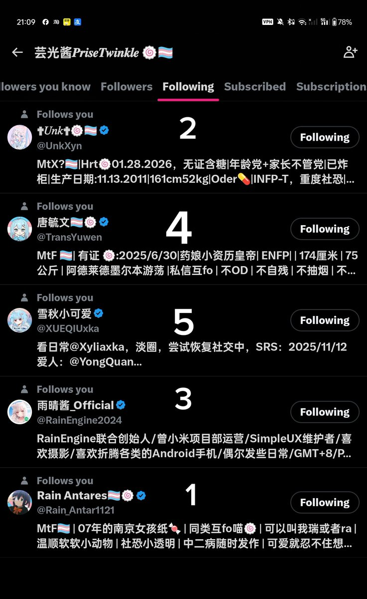

孙悟元
@wuyuandev
@PriseTwinkle 芸光严选？除了中军号外全都关注了

芸光酱𝑷𝒓𝒊𝒔𝒆𝑻𝒘𝒊𝒏𝒌𝒍𝒆 🍥🏳️⚧️
@PriseTwinkle
有些人注意到了我X上的关注很少。这主要是我关注的只是对我来说重要的人。
我认为按重要度排名：
1：RainAntares （Rain_Antar1121在我10几粉时第一格关注我超1,000粉的mtf，也算我第一个通过x聊天的人
2：Unk （RainEngine_2024）和我年龄差不多但比较诡异的年龄党，X到现在聊天最多的, https://t.co/rX5kUI4gPU https://t.co/5Jnmsvf0GJ